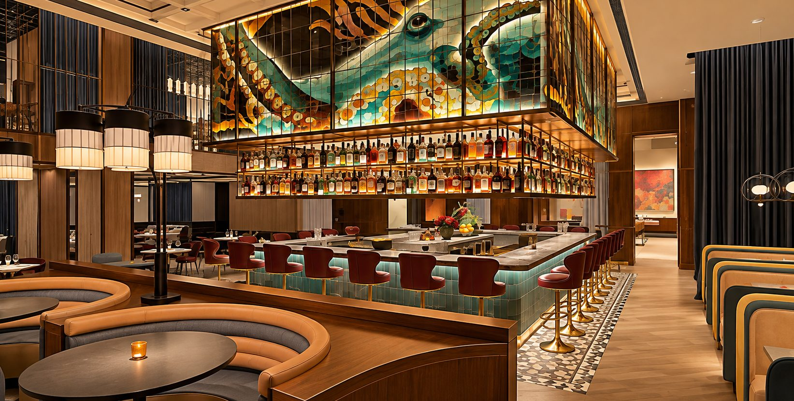
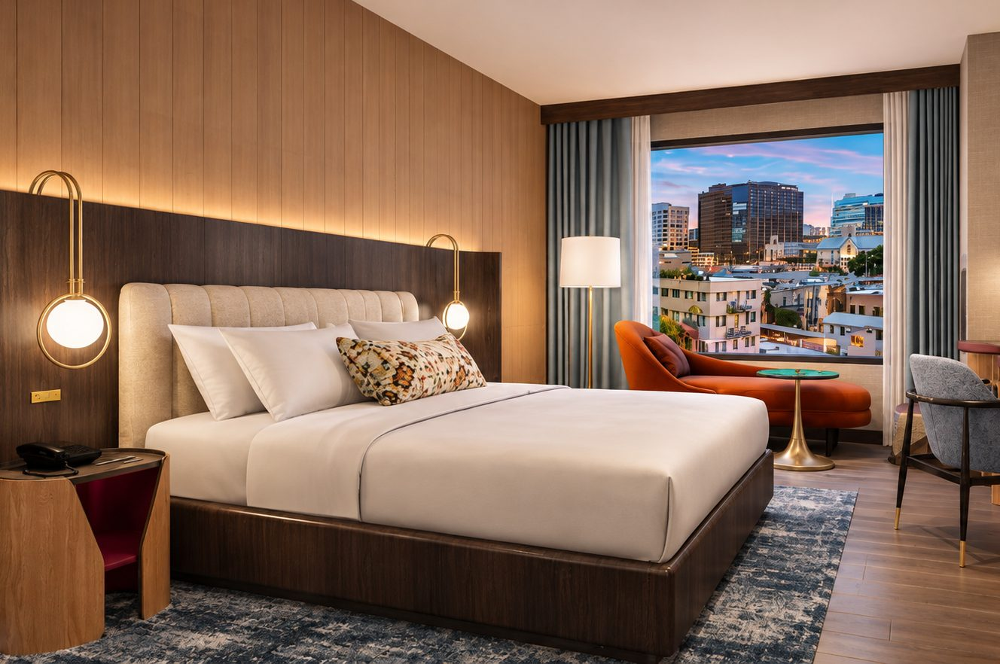
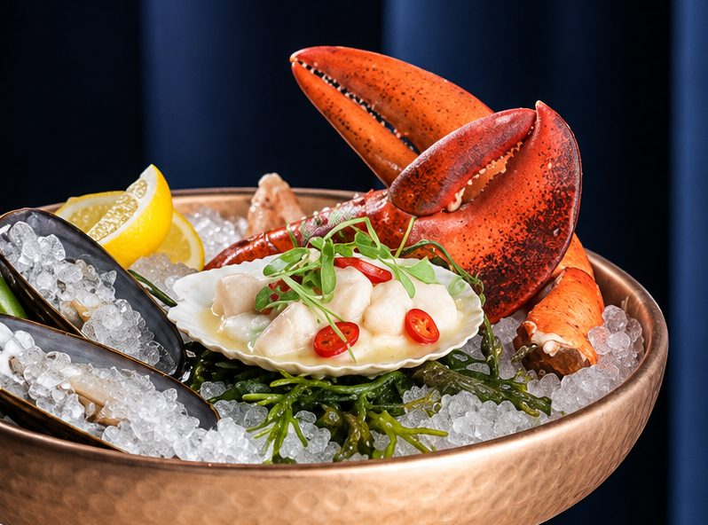
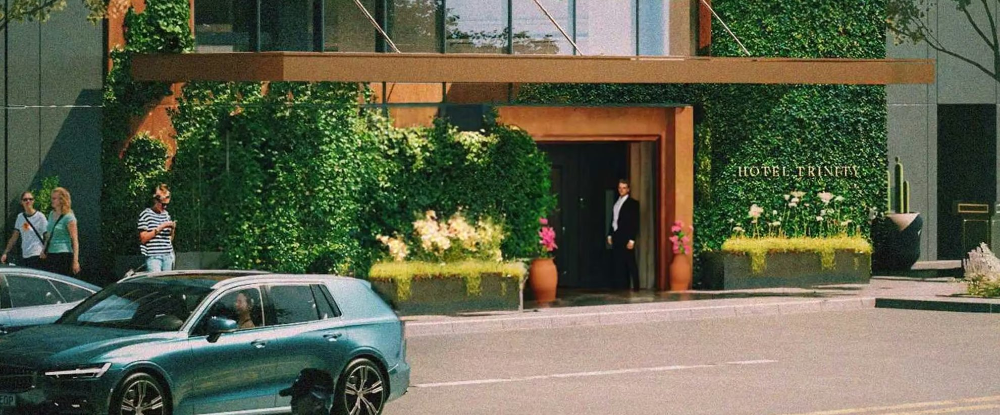
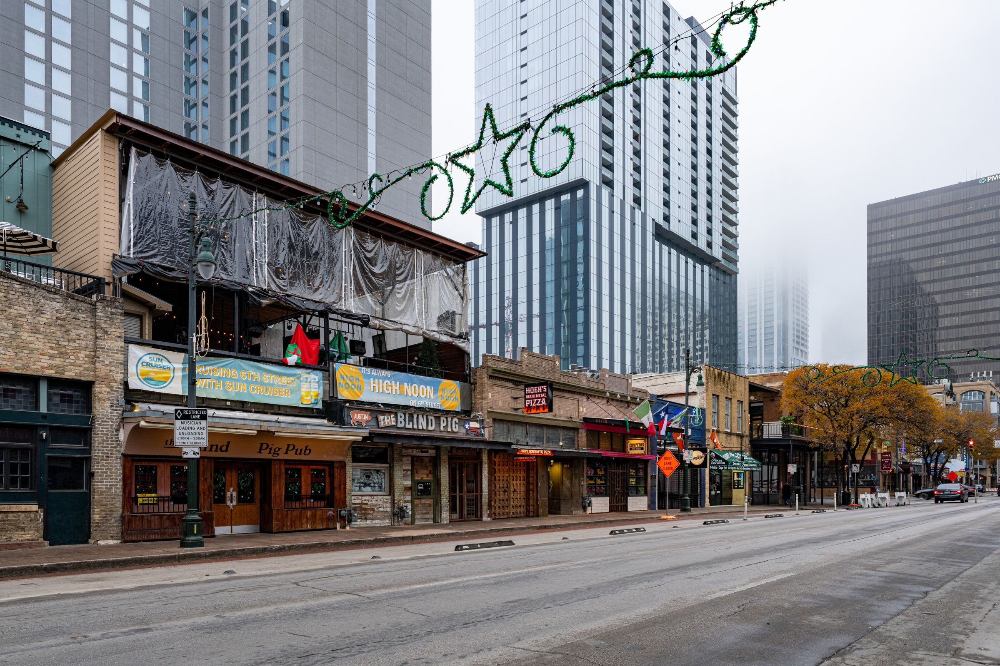

Every new hotel promises a sense of place. Most try to build one from scratch: a mural, a cocktail named after a street, a playlist.
Hotel Trinity got a shortcut. It's next door to Antone's.
At 305 E. 5th Street sits Antone's Nightclub, the blues room the late Clifford Antone opened in 1975. At 311 E. 5th Street, as of Thursday, November 5, 2026, sits Hotel Trinity, an Autograph Collection hotel by Marriott. Its street-level restaurant, The Yacht Club, opened the same morning, starting with breakfast at 6:30 a.m. The two buildings share a curb. The hotel is Antone's official hotel partner.
That's the story. Everything else is detail.

The building
Hotel Trinity has 258 rooms, including 20 suites. White Lodging developed and operates it, and it is the only Autograph Collection hotel in downtown Austin.
The rooms lean residential: wood floors, custom millwork, locally inspired artwork, furniture closer to an apartment than a hotel. White Lodging's line for the place is "A hotel that feels less like one." For a building whose best assets are a neighborhood restaurant and a famous neighbor, that's the right ambition.
There are also 6,671 square feet of meeting and event space, sized for groups of 12 up to 300.
The door that faces the street
Here's the test I put to any new downtown hotel: does its front door face the street, or only the lobby?
The Yacht Club is the answer. It sits on the first floor, and you don't need a room key to eat there. Antone's describes it as "welcoming every guest as a member, if only for the meal."
The kitchen calls its menu "A Menu of Many Coasts." Oysters, crudo, caviar and a daily fresh catch, with dishes like Peruvian leche de tigre, Japanese hamachi crudo, Thai shellfish broths and Mediterranean octopus a la plancha. Executive chef Jason Lee came up through The French Laundry and Saison. At dinner there's a ten-course chef's tasting menu for $145. Happy hour runs daily from 3 to 6 p.m., with $3 oysters.
Three-dollar oysters a few steps from a blues club. That's a reason to walk in.
The hours are long, which matters on a street like this. The restaurant is open every day from 6:30 a.m. to midnight. Breakfast runs Monday through Thursday, 6:30 to 10:30 a.m., and brunch Friday through Sunday, 6:30 a.m. to 3 p.m. Lunch is Monday through Thursday, 11 a.m. to 3 p.m. Dinner is 5 to 10 p.m. Sunday through Thursday and 5 to 11 p.m. Friday and Saturday. The bar runs 11 a.m. to midnight daily.
Reservations go through OpenTable or the host stand. Walk-ins are welcome when there's room, and bar seats are first-come, first-served. There's no outdoor seating. Dress is smart casual, families are welcome, and valet for diners is $10 for up to three hours.
The roof that doesn't
Upstairs is a different deal. Sundeck Social is the hotel's rooftop pool and social club, and it's for guests only. Marriott's heading for it reads "Reserved for the Checked-in." Antone's calls it "the hotel's guest-only rooftop & pool." Cabanas, skyline views, rotating rooftop programming.
So the rule for locals is simple. Want oysters? Walk in off Fifth. Want the deck? Book a room.


The wall they share
The partnership is what turns a chain announcement into an Austin story. Antone's names Hotel Trinity "the official hotel partner of Antone's." The hotel answers from the other side of the wall, pointing guests to "the legendary nightclub located next door."
It has a stage of its own. Sundeck Sessions are small rooftop performances curated by Antone's and held at Sundeck Social for overnight guests. The first is set for the night after opening: Chaparelle plays a private rooftop show on November 6. The hotel also has Antone's-inspired suites.
At street level, nothing about the club changes. Antone's is still Antone's. What changes is the walk home. After a show, some of the people spilling onto Fifth will be twenty steps from bed.

The block
Hotel Trinity sits steps from Antone's, Congress Avenue, the Texas State Capitol and the Sixth Street entertainment district, with the Convention Center and Lady Bird Lake a short walk south and east. East Fifth has always been a working street: bars, offices, loading zones. A seafood room that opens for breakfast and pours until midnight gives it another set of hours.
Downtown doesn't need more buildings that pretend the block was empty before they arrived. This one doesn't pretend. Its smartest move was choosing who to stand next to, and saying so.
Hotel Trinity, Autograph Collection. 311 E. 5th Street, Downtown Austin, 78701. Opened November 5, 2026. The Yacht Club is on the first floor, open daily 6:30 a.m. to midnight. Sundeck Social, upstairs, is for hotel guests. Antone's Nightclub is next door at 305 E. 5th Street.